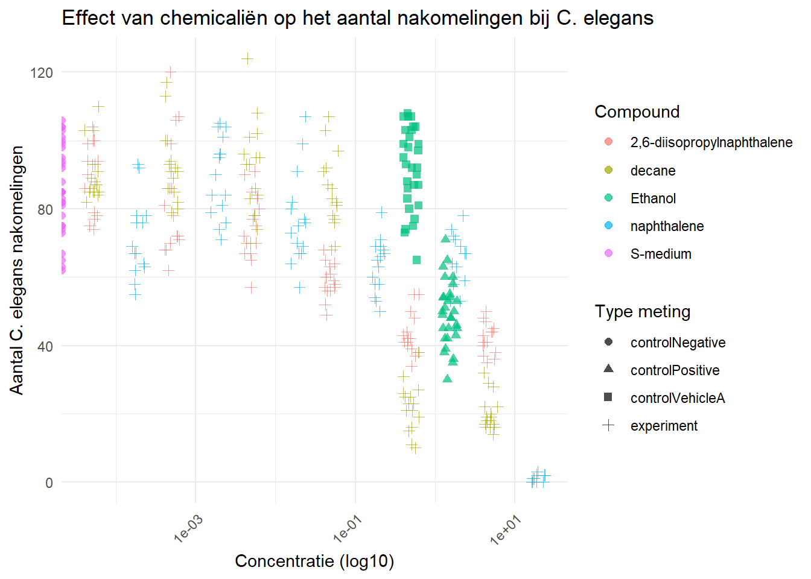
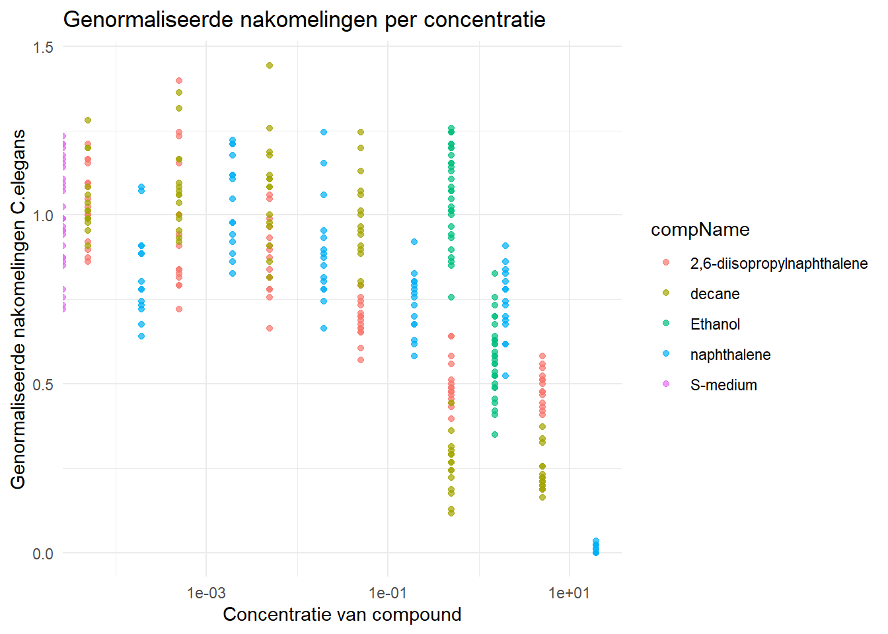
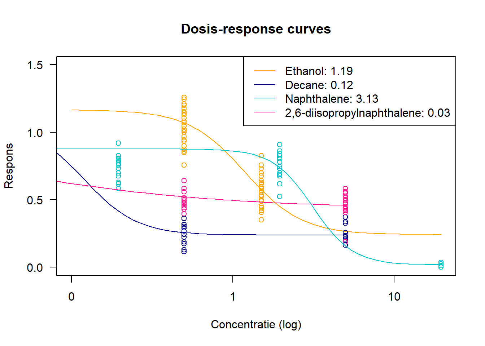
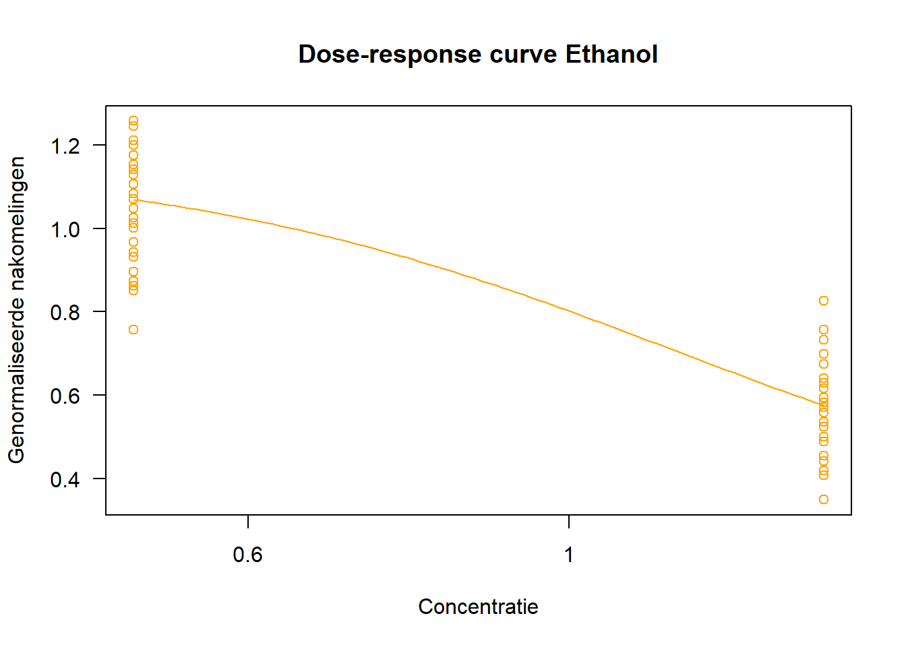
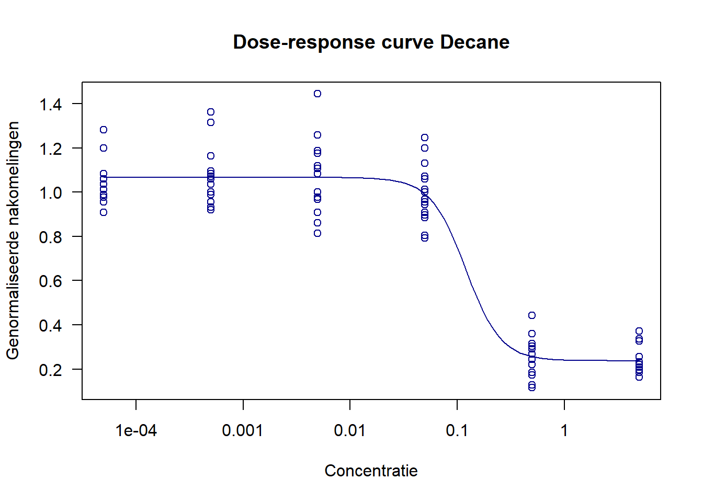
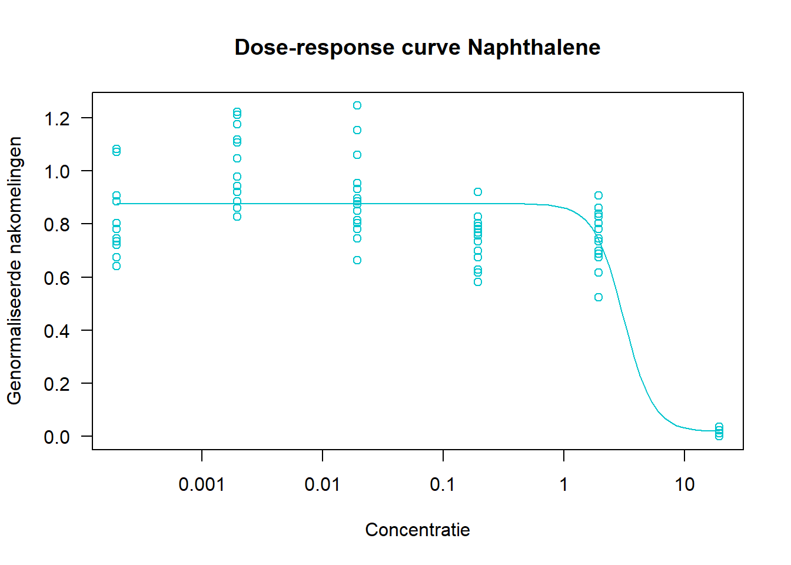
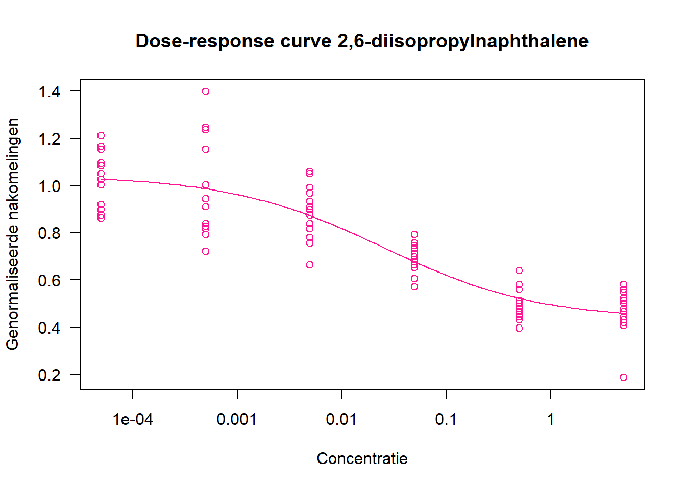

5 Reproduceerbare Analyse 1
5.1 C.elegans toxiciteitsexperiment
In dit hoofdstuk wordt een analyse uitgevoerd op data uit een C. elegans-experiment. Tijdens dit experiment werden nematoden van de soort Caenorhabditis elegans blootgesteld aan verschillende concentraties van een aantal chemicaliën. De geteste stoffen zijn: 2,6-diisopropylnaphthalene, decaan, naftaleen, ethanol en S-medium.
Voor de analyse zijn de volgende variabelen in de dataset relevant:
- RawData: het aantal nakomelingen dat is geteld per conditie.
- compName: de naam van het chemicalie waaraan de wormen zijn blootgesteld.
- compConcentration: de concentratie van het gebruikte chemicalie.
- expType: een aanduiding of het gaat om een experimentele conditie of een controle (negatieve controle of vehiclecontrole).
De dataset is afkomstig van het HU-lectoraat Innovative Testing in Life Sciences & Chemistry.
Het doel van deze analyse is om de gegevens op een reproduceerbare manier te verwerken en visualiseren in een RMarkdown-bestand. Hiervoor worden de volgende R-packages gebruikt:
readxlvoor het inlezen van de Excel-bestanden
drcvoor het uitvoeren van dose-response analyse
ggplot2voor het maken van grafieken Data-inlees en inspectie
Om de data correct te kunnen analyseren, is het belangrijk om de stappen zorgvuldig te doorlopen.
5.1.1 Stap 1: Data opslaan en inlezen
De eerste stap is om het Excel-bestand met de experimentele data op een vaste locatie op je laptop op te slaan, bijvoorbeeld in een map genaamd raw_data. Vervolgens geef je het pad naar dit bestand in R en lees je het in met behulp van de functie read_excel() uit het readxl-pakket. Als extra controle kun je de ingelezen data weergeven in een tabelvorm met behulp van de reactable-functie.
Onderstaande code laat zien hoe je dit doet:
5.1.2 Stap 2: Inspecteren van de datatypes
In deze stap controleer je of de kolommen van de dataset correct zijn ingelezen en of ze de goede datatype hebben. Dit is belangrijk, omdat foutieve datatypes — bijvoorbeeld een getal dat als tekst is ingelezen — problemen kunnen veroorzaken in de verdere analyse.
Op basis van de inhoud van de dataset wordt verwacht dat RawData zal uit numerieke waarden (numeric) bestaan, compName uit tekst (character), en compConcentration ook numeriek zal zijn.
Er zijn verschillende manieren om data te inspecteren. Ik laat hieronder twee methodes zien.
Manier 1: De class() functie gebruiken per kolom
Met de class() functie kun je het datatype van één specifieke kolom bekijken:
## [1] "numeric"## [1] "character"## [1] "character"Manier 2: Meerdere kolommen tegelijk controleren met select() en map()
Bij deze methode kies je meerdere kolommen tegelijk met select() uit het dplyr-pakket. Vervolgens pas je met map() uit het purrr-pakket de functie class() toe op elke kolom, zodat je van alle geselecteerde kolommen het datatype kan bekijken.
# Inspecteer de datatypes m.b.v select en map
data_celegans %>%
dplyr::select(RawData, compName, compConcentration) %>%
purrr::map(class)## $RawData
## [1] "numeric"
##
## $compName
## [1] "character"
##
## $compConcentration
## [1] "character"5.1.3 Stap 3: Datatype corrigeren
Uit stap twee blijkt dat de kolom compConcentration als character (tekst) is ingelezen, terwijl verwacht dat dit een numeriek datatype zou zijn. Voor een correcte analyse en visualisatie is het belangrijk dat de concentraties als getallen worden herkend. Daarom zet je deze kolom nu om naar numeriek met behulp van mutate() uit het dplyr-pakket.
# Zet compConcentration om van character naar numeric
data_celegans <- data_celegans %>%
mutate(compConcentration = as.numeric(compConcentration))
# Controleer of de omzetting is gelukt
class(data_celegans[["compConcentration"]])## [1] "numeric"5.1.4 Stap 4: Scatter plot maken
Bij deze stap kun je een scatter plot maken m.b.v ggplot om het effect van verschillende concentraties en chemicaliën op het aantal nakomelingen van C. elegans te visualiseren. De concentratie worden op de x-as (log10-schaal) en het aantal nakomelingen (RawData) op de y-as weergegeven. Elke chemische stof krijgt een eigen kleur en de controletype (expType) wordt weergegeven met verschillende symbolen. Door jitter toe te voegen voorkom je dat punten elkaar overlappen.
# Maak scatterplot
data_celegans_scatterplot <- ggplot(data_celegans, aes(x = compConcentration,
y = RawData,
color = compName,
shape = expType)) +
# Voeg jitter toe om overlapping van punten te voorkomen
geom_jitter(width = 0.1, height = 0, alpha = 0.7, size = 2) +
# Zet x-as om naar log10-schaal voor betere spreiding
scale_x_log10() +
# Voeg labels toe
labs(x = "Concentratie (log10)",
y = "Aantal C. elegans nakomelingen",
title = "Effect van chemicaliën op het aantal nakomelingen bij C. elegans",
color = "Compound",
shape = "Type meting") +
# Pas thema aan voor betere leesbaarheid
theme_minimal() +
theme(axis.text.x = element_text(angle = 45, hjust = 1))
# laat de scatterplot zien
data_celegans_scatterplot
Figuur 1: Scatterplot resultaten. Op de y-as staat het aantal nakomelingen van C. elegans en op de x-as de log10 van de compoundconcentratie. Elke compound is aangeduid met een eigen kleur en per experimenttype (controle of test) is een ander symbool gebruikt. De punten zijn licht verschoven met jitter om overlapping te voorkomen.
De positieve controle voor dit experiment is ethanol, weergegeven met een driehoekig symbool. Ethanol staat bekend om zijn remmende effect op de voortplanting en wordt gebruikt om de experimentele gevoeligheid aan te tonen. De negatieve controle is S-medium, aangeduid met een cirkel, dat geen effect heeft op de voortplanting en dus de basislijn vormt voor vergelijking.
Er is een duidelijke negatieve correlatie te zien tussen de compoundconcentratie en het aantal nakomelingen. Hogere concentraties leiden tot minder nakomelingen, wat suggereert dat deze stoffen toxisch zijn voor de voortplanting. Vooral bij decane en bij de hoogste concentratie van naphthalene is het aantal nakomelingen sterk verminderd.
5.1.5 Stap 5: Normalizeren van de data voor de negatieve controle
Om de gevoeligheid van C. elegans voor de verschillende chemicaliën beter te kwantificeren, moet de data worden genormalizeerd.
# Filter de negatieve controle
control_neg <- data_celegans %>% filter(expType == "controlNegative")
# Bereken het gemiddelde van de negatieve controle
control_neg_mean <- mean(control_neg$RawData, na.rm = TRUE)
# Check het gemiddelde van de negatieve controle
control_neg_mean## [1] 85.9# Normaliseer de data
data_celegans_normalizeren <- data_celegans %>%
mutate(normalized_RawData = RawData / control_neg_mean)
# Check of de negatieve controle correct is genormaliseerd
data_celegans_normalizeren_check <- data_celegans_normalizeren %>%
filter(expType == "controlNegative")
# Bereken gemiddelde van de genormaliseerde negatieve controle
data_celegans_normalizeren_check_gemiddelde <- mean(data_celegans_normalizeren_check$normalized_RawData)
# Bekijk of het gemiddelde ongeveer 1 is
data_celegans_normalizeren_check_gemiddelde## [1] 1Wat is normalizeren en waarom normaliseren?
Dit houdt in dat de waarden voor elke stof worden uitgedrukt als een fractie van de negatieve controle, waarbij de gemiddelde waarde van de negatieve controle (S-medium) wordt ingesteld op 1. Door deze normalisatie kunnen we de effecten van de verschillende chemicaliën op de voortplanting van de wormen direct vergelijken, ongeacht de absolute schaal van de gemeten waarden. Dit helpt om de variatie tussen de verschillende experimenten te verminderen en maakt het eenvoudiger om de relatieve toxiciteit van de chemicaliën te beoordelen.
Maak nu een scatterplot met de genormaliseerde waarden.
# maak een scatterplot met de genormaliseerde waarden
ggplot(data_celegans_normalizeren, aes(x = compConcentration, y = normalized_RawData, color = compName)) +
geom_point(alpha = 0.7) +
theme_minimal() +
labs(
title = "Genormaliseerde nakomelingen per concentratie",
x = "Concentratie van compound",
y = "Genormaliseerde nakomelingen C.elegans"
) +
scale_x_log10() # optioneel voor log schaal
Figuur 2: Genormaliseerde nakomelingen C.elegans per concentratie voor verschillende chemicaliën.
Deze scatterplot met genormaliseerde waarden is duidelijk veel beter dan een plot met ruwe data. (;
5.2 Stappenplan voor dose-response analyse
Een typische analyse voor dit soort data is het uitvoeren van een dose-response analyse met een log-logistisch model om de IC50 concentratie te bepalen. Je kan met de dose-response curve voor elke compound bepalen wat de effecten van de verschillende chemicaliën (ethanol, decane, naphtalene en 2,6-diisopropylnaphthalene) op het aantal nakomelingen van C.elegans.
Hierbij geef ik een korte stappenplan om te helpen bij het uitvoeren van de dose-response analyse.
5.2.1 Stap 1: Installeer en laad het drc-pakket
Voor deze analyse maken we gebruik van het pakket drc. Hierbij de code voor het instaleren van de pakket en vergeet niet daarna de pakket te laden.
5.2.2 Stap 2: Filter de data (verwijder NA’s en incomplete observaties)
Voordat we de dose-response analyse uitvoeren, is het belangrijk om te zorgen dat we enkel complete observaties gebruiken. Daarom filteren we de data en verwijderen we rijen met ontbrekende waarden (NA) in de kolommen die relevant zijn voor de analyse: de genormaliseerde respons (normalized_RawData), de concentratie (compConcentration) en de naam van de verbinding (compName).
5.2.3 Stap 3: Dosis-respons modellen fitten
We passen per verbinding (compound) een log-logistische 4-parameter (LL.4) model toe op de gegevens. Dit model wordt vaak gebruikt om de biologische respons bij verschillende doseringen te beschrijven. Voor elke stof maken we een apart modelobject aan.
# Veronderstel dat je fit objecten hebt voor elke verbinding
filter_ethanol <- drm(normalized_RawData ~ compConcentration, data = data_celegans_filter %>% filter(compName == "Ethanol"), fct = LL.4())
filter_decane <- drm(normalized_RawData ~ compConcentration, data = data_celegans_filter %>% filter(compName == "decane"), fct = LL.4())
filter_naphthalene <- drm(normalized_RawData ~ compConcentration, data = data_celegans_filter %>% filter(compName == "naphthalene"), fct = LL.4())
filter_diisopropylnaphthalene <- drm(normalized_RawData ~ compConcentration, data = data_celegans_filter %>% filter(compName == "2,6-diisopropylnaphthalene"), fct = LL.4())5.2.4 Stap 4: Bepaal de IC50-waarden
De IC50 is de concentratie waarbij de helft van het maximale effect wordt bereikt. Dit is een belangrijke maat voor toxiciteit: hoe lager de IC50, hoe toxischer de stof. Hier berekenen we de IC50 voor elke verbinding op basis van het model dat we net fitten.
##
## Estimated effective doses
##
## Estimate Std. Error
## e:1:50 1.1907 NaN##
## Estimated effective doses
##
## Estimate Std. Error
## e:1:50 0.119453 0.042934##
## Estimated effective doses
##
## Estimate Std. Error
## e:1:50 3.129 NaN##
## Estimated effective doses
##
## Estimate Std. Error
## e:1:50 0.025072 0.0109985.2.5 Stap 5: Overzichtstabel van IC50-waarden
Hier tonen we de IC50-waarden overzichtelijk in een tabel. Dit helpt om snel te zien welke verbinding het meest toxisch is.
tibble_IC50 <- tibble(
Compound = c("Ethanol", "Decane", "Naphthalene", "2,6-diisopropylnaphthalene"),
IC50 = c(IC50_ethanol, IC50_decane, IC50_naphthalene, IC50_diisopropylnaphthalene)
) %>% knitr::kable()
tibble_IC50| Compound | IC50 |
|---|---|
| Ethanol | 1.1907273 |
| Decane | 0.1194530 |
| Naphthalene | 3.1289885 |
| 2,6-diisopropylnaphthalene | 0.0250723 |
5.2.6 Stap 6: Dosis-respons curves combineren in één figuur
Hier visualiseren we de dose-response curves van alle vier verbindingen samen in één figuur. De curves geven aan hoe de respons van C. elegans verandert bij oplopende concentraties van een stof. We gebruiken een log-schaal voor de x-as en geven elke stof een unieke kleur. De legenda toont de bijbehorende IC50-waarden.
# Plot eerste curve (ethanol) als basis
plot(
filter_ethanol, type = "all", log = "x",
col = "orange", ylim = c(0, 1.5),
xlim = c(0.01, max(data_celegans_filter$compConcentration, na.rm = TRUE)),
xlab = "Concentratie (log)", ylab = "Respons",
main = "Dosis-response curves"
)
# Voeg andere curves toe in nieuwe kleuren
plot(filter_decane, add = TRUE, col = "darkblue", type = "all") # decane
plot(filter_naphthalene, add = TRUE, col = "turquoise3", type = "all") # naphthalene
plot(filter_diisopropylnaphthalene, add = TRUE, col = "deeppink",type = "all") # 2,6-diisopropylnaphthalene
# Voeg legenda toe met IC50-waarden
legend("topright",
legend = c(
paste("Ethanol:", round(IC50_ethanol, 2)),
paste("Decane:", round(IC50_decane, 2)),
paste("Naphthalene:", round(IC50_naphthalene, 2)),
paste("2,6-diisopropylnaphthalene:", round(IC50_diisopropylnaphthalene, 2))
),
col = c("orange", "darkblue", "turquoise3", "deeppink"),
lty = 1)
Figuur 3: Samengestelde dosis-responscurve. In deze figuur zijn de dosis-responscurves van vier verschillende chemische verbindingen weergegeven. Op de x-as staat de logaritmische concentratie van de stof, en op de y-as de genormaliseerde respons (aantal nakomelingen van C. elegans). Elke curve toont hoe de respons verandert met toenemende concentratie.
5.2.7 Stap 7: Eén curve per stof (optioneel)
Naast de gecombineerde plot kunnen we ook voor elke stof afzonderlijk de dosis-respons curve bekijken. Dit kan handig zijn voor meer gedetailleerde inspectie van de fits.
# Voor ethanol
plot(filter_ethanol, type = "all", log = "x", col = "orange", main = "Dose-response curve Ethanol", xlab = "Concentratie", ylab = "Genormaliseerde nakomelingen")
Figuur 4: Dosis-responscurves (Ethanol)
# Voor decane
plot(filter_decane, type = "all", log = "x", col = "darkblue", main = "Dose-response curve Decane", xlab = "Concentratie", ylab = "Genormaliseerde nakomelingen")
Figuur 5: Dosis-responscurves (Decane)
# Voor naphthalene
plot(filter_naphthalene, type = "all", log = "x", col = "turquoise3", main = "Dose-response curve Naphthalene", xlab = "Concentratie", ylab = "Genormaliseerde nakomelingen")
Figuur 6: Dosis-responscurves (Naphthalene)
# Voor 2,6-diisopropylnaphthalene
plot(filter_diisopropylnaphthalene, type = "all", log = "x", col = "deeppink", main = "Dose-response curve 2,6-diisopropylnaphthalene", xlab = "Concentratie", ylab = "Genormaliseerde nakomelingen")
Figuur 7: Dosis-responscurves (2,6-diisopropylnaphthalene)
5.2.8 conclusie
In deze dosis-responsanalyse hebben we de IC50-waarden bepaald voor vier chemische verbindingen op basis van hun effect op C. elegans. De IC50 (de concentratie waarbij 50% van het maximale effect wordt bereikt) geeft een indicatie van de toxiciteit van een stof: hoe lager de IC50, hoe toxischer de stof is voor de wormen.
Uit de resultaten blijkt het volgende:
- 2,6-diisopropylnaphthalene heeft de laagste IC50 (~0.025), wat wijst op een zeer hoge toxiciteit.
- Decane heeft ook een relatief lage IC50 (~0.12), wat duidt op matige tot hoge toxiciteit.
- Ethanol laat een hogere IC50 zien (~1.19), en is dus minder toxisch in vergelijking met de vorige twee.
- Naphthalene heeft de hoogste IC50 (~3.13), wat suggereert dat het de minst toxische stof is van de vier.
Deze resultaten geven waardevolle inzicht in de relatieve toxiciteit van deze verbindingen voor C. elegans en vormen een basis voor verder toxicologisch onderzoek.
5.3 Wetenschappelijke Referenties
5.3.1 1. Ethanol en effecten op C. elegans voortplanting:
- Ethanol-induced reproductive toxicity in C. elegans
PubMed-abstract over de effecten van ethanol op de voortplanting van C. elegans. - Ethanol as a positive control for reproductive toxicity studies
PubMed-abstract over ethanol als positieve controle in toxiciteitsstudies bij C. elegans.
5.3.2 2. Decaan en naphthaleen als toxische stoffen:
- Toxicity of aliphatic hydrocarbons, including decane
Article op ScienceDirect over de toxiciteit van alifatische koolwaterstoffen, waaronder decaan. - Toxicological impact of naphthalene on C. elegans
PubMed-abstract over de toxische effecten van naphthaleen op C. elegans.
5.3.3 3. Dosis-responscurves en IC50-waarde bepaling:
- Introduction to IC50
Uitleg over IC50-bepaling en dosis-responsanalyse op NCBI. - Dose-response relationship in toxicology and pharmacology
PubMed-abstract over de dosis-responsrelatie in toxicologie en farmacologie.
5.3.4 4. S-medium als controle in biologische experimenten:
- S-medium in C. elegans experiments
Artikel op SpringerLink over het gebruik van S-medium voor C. elegans-experimenten.